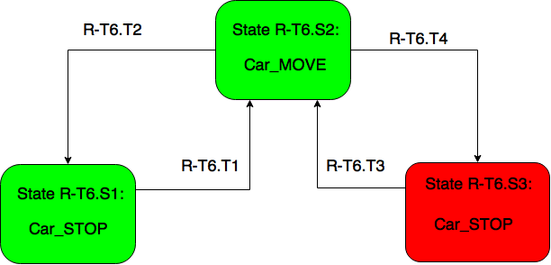

| Event State Machine |
External Functions for
monitoring |
| CarLightStateMachine | NONE / For project 8 this machine only update
information of pressed car button |
| DoorStateMachine |
doorOpening, doorOpened, doorClosing,
doorReopening, doorClosed |
| HallLightStateMachine | NONE / For project 8 this machine only update information of pressed hall button |
| WeightStateMachine |
weightChanged |
| updateCurrentFloor | NONE |
| DriveSpeedStateMachine | carMove,carStop |
| CarLanterStateMachine |
lanternOn,lanternOff |
| DriveStateMachine |
driveCommandUp,driveCommandDown,driveCommandStop |

| Transition # |
Guard Condition |
| [R-T6.T1] | DriveSpeed != Stop |
| [R-T6.T2] | DriveSpeed == Stop && (CarCall[f,b] == True || HallCall[f,b,d] == True) |
| [R-T6.T3] | DriveSpeed != Stop |
| [R-T6.T4] | DriveSpeed == Stop && (CarCall[f,b] == False && HallCall[f,b,d] == False) |
| Transition # | Guard Condition |
| [R-T7.T1] | DoorClosing == True |
| [R-T7.T2] | DoorOpening == True && (HallCall[f,b,d] == True || CarCall[f,b] == True) |
| [R-T7.T3] | DoorClosing == True |
| [R-T7.T4] | DoorOpening == True && (HallCall[f,b,d] == False && CarCall[f,b] == False) |
| Transition # | Guard Condition |
| [R-T8.1.T1] | DoorOpening == True &&
(any CarCall[f,b] == False && HallCall[f,b,d] ==
False where f != current floor) |
| [R-T8.1.T2] | DoorClosing == True |
| [R-T8.1.T3] | DoorOpening == True && (HallCall[f,b,d] == True || CarCall[f,b] == True) |
| [R-T8.1.T4] | DoorClosing == True |
| [R-T8.1.T5] | DoorClosing == True |
| [R-T8.1.T6] | DoorOpening == True && (HallCall[f,b,d] == True || CarCall[f,b] == True) |
| Transition # | Guard Condition |
| [R-T8.2.T1] | CarLantern[d] == True |
| [R-T8.2.T2] | CarLantern[d] == False |
| [R-T8.2.T3] | CarLantern[d] == False && all DoorClosed != True |
| [R-T8.2.T4] | CarLantern[d] == True && all DoorOpening != True |
| [R-T8.2.T5] | CarLantern[d] == True |
| [R-T8.2.T6] | CarLantern[d] == False |
| Transition # | Guard Condition |
| [R-T8.3.T1] |
Drive.Direction !=
prevCarLanternState && any CarCall or HallCall
==true in that direction |
| [R-T8.3.T2] | Drive.Direction == STOP || Drive.Direction == prevCarLanternState |
| Transition # | Guard Condition |
| [R-T9.T1] | Drive.speed() > 0 |
| [R-T9.T2] | Drivespeed.speed() == 0
&& fastSpeedCommand == true |
| [R-T9.T3] | Drive.speed() > 0 |
| [R-T9.T4] | Drivespeed.speed() == 0
&& fastSpeedCommand == false |
When the car stops at some floor, the carStop() function will check whether the fastSpeedCommand has been set to true or false, if true, it means that once during the traveling state the car has been commanded to fast speed to the maximum degree.Otherwise it was not commanded to fast speed. Once the all doors are closed, the doorClosed() function will reset boolean fastSpeedCommand to false again.
| Transition # | Guard Condition |
| [R-T10.1] | DoorCommand == NUDGE && reversalCount
>= 1 |
| [R-T10.2] | DoorCommand == NUDGE && reversalCount
== 0 |
| [R-T10.3] | DoorClosed == true |
| [R-T10.4] | DoorClosed == true |
| [R-T10.5] | DoorCommand = Open |
| [R-T10.6] | CountDown <= 0 |
| [R-T10.7] | isReversing == true |
| [R-T10.8] | DoorClosed == true |
| Acceptance
Test Name |
Verification
Status |
Link to
Verification Results |
Notes |
| proj7acceptance1.pass |
fail(But i considered it is
pass because there is only 1 warning and it is reasonable, I
will explain it in the Notes part) |
proj7acceptance1_pass.stats |
RT-6 throws only 1 warnning.
It's reasonable because there is a landing happened at the
beginning without any calls at that floor. |
| .... |